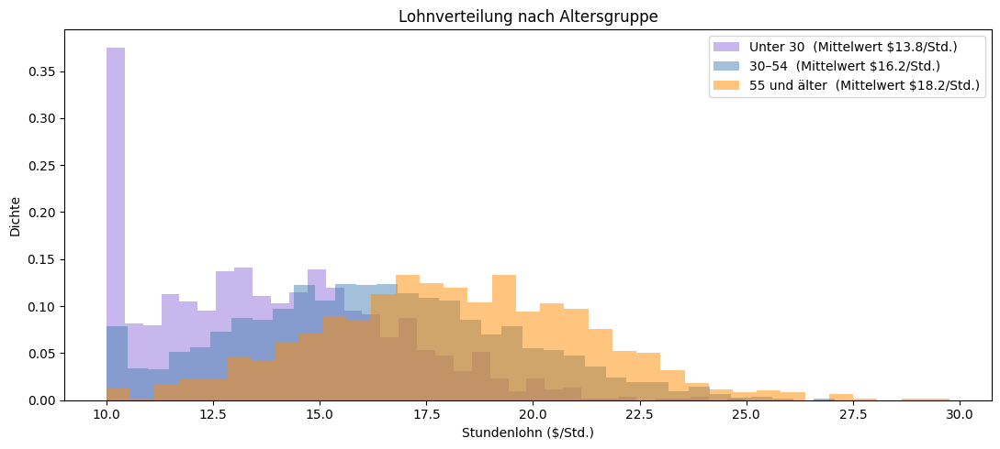
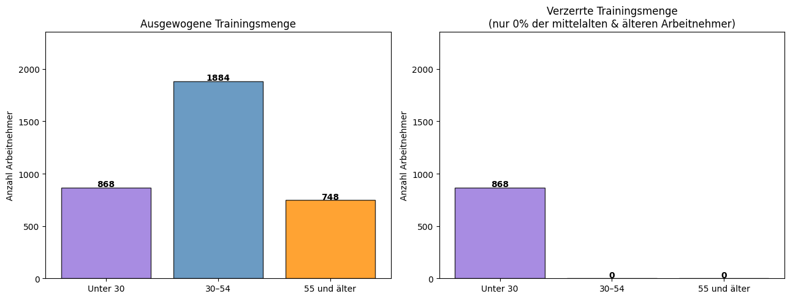
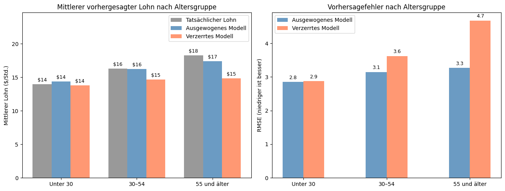

2. Stichprobenverzerrung (Sampling Bias)#
Was ist eine Stichprobenverzerrung?#
Stell dir vor, du willst die Lesegewohnheiten einer ganzen Stadt untersuchen und verteilst dazu Fragebögen in der öffentlichen Bibliothek. Fast jeder, den du triffst, liest regelmäßig — deine Daten sehen großartig aus! Aber wenn du diese Ergebnisse nutzt, um die Lesegewohnheiten der ganzen Stadt vorherzusagen, wird dein Modell zu optimistisch sein, weil du nur Menschen befragt hast, die bereits in der Bibliothek waren. Menschen, die nie in eine Bibliothek gehen, kamen in deinen Daten gar nicht vor.
Das ist eine Stichprobenverzerrung (Sampling Bias): wenn die Daten, mit denen ein Modell trainiert wird, nicht genau die reale Population widerspiegeln, auf die das Modell später angewendet wird. Manche Gruppen kommen häufiger vor, als sie sollten (Überrepräsentation), während andere kaum auftauchen (Unterrepräsentation). Das Modell lernt die Muster der Mehrheitsgruppe gut, hat aber Schwierigkeiten, sobald es auf Gruppen trifft, die es im Training kaum gesehen hat.
In diesem Tutorial versuchen wir, den genauen Stundenlohn einer Person aus Bildung, Berufserfahrung, Wochenstunden und Betriebszugehörigkeit vorherzusagen. Wir trainieren ein Modell mit einer repräsentativen Stichprobe aller Altersgruppen und ein zweites mit Daten, die nur junge Arbeitnehmer enthalten. Da Berufserfahrung der Haupttreiber für den Lohn ist und junge Arbeitnehmer wenig davon haben, lernt das verzerrte Modell nie, wie Arbeitnehmer mit viel Erfahrung aussehen. Trifft es zur Testzeit auf sie, unterschätzt es ihren Lohn drastisch.
Die wahre Population#
Bevor wir eine Verzerrung einführen, schauen wir uns die Lohnverteilung über die Altersgruppen an. Erfahrung sammelt sich mit dem Alter an, und da Erfahrung in unserem Modell der Haupttreiber für den Lohn ist, verdienen ältere Arbeitnehmer im Schnitt deutlich mehr.

Mittlerer Lohn in der Gesamtpopulation:
Unter 30 : $13.8/Std. (n=1226)
30–54 : $16.2/Std. (n=2721)
55 und älter : $18.2/Std. (n=1053)
Die drei Verteilungen sind klar voneinander getrennt: Junge Arbeitnehmer ballen sich um $14/Std., mittelalte um $16/Std. und ältere oberhalb von $18/Std. Ein Modell, das nur junge Arbeitnehmer gesehen hat, hat keine Ahnung, dass Löhne diese Höhen erreichen können.
Eine verzerrte Stichprobe erstellen#
Wir erzeugen nun eine verzerrte Trainingsmenge, indem wir alle jungen Arbeitnehmer, aber keine mittelalten oder älteren Arbeitnehmer behalten. Das simuliert ein Datenerhebungsszenario wie etwa eine Online-Umfrage, die nur Berufseinsteiger erreicht hat.
df_biased_train = make_biased_sample(df_full_train, keep_fraction=KEEP_FRACTION)
print("Zusammensetzung der Trainingsmenge vor und nach der Stichprobenverzerrung")
print("=" * 60)
print(f"{'Altersgruppe':<18} {'Original':>10} {'Verzerrt':>8} {'% behalten':>10}")
print("-" * 60)
for g in GROUP_ORDER:
orig = (df_full_train['age_group'] == g).sum()
bias = (df_biased_train['age_group'] == g).sum()
pct = 100 * bias / orig if orig > 0 else 0
print(f"{g:<18} {orig:>10} {bias:>8} {pct:>9.0f}%")
print(f"\nMittlerer Lohn in ausgewogener Trainingsmenge: ${df_full_train['wage'].mean():.1f}/Std.")
print(f"Mittlerer Lohn in verzerrter Trainingsmenge: ${df_biased_train['wage'].mean():.1f}/Std.")
Zusammensetzung der Trainingsmenge vor und nach der Stichprobenverzerrung
============================================================
Altersgruppe Original Verzerrt % behalten
------------------------------------------------------------
Unter 30 868 868 100%
30–54 1884 0 0%
55 und älter 748 0 0%
Mittlerer Lohn in ausgewogener Trainingsmenge: $16.0/Std.
Mittlerer Lohn in verzerrter Trainingsmenge: $13.8/Std.

Die verzerrte Menge enthält nur junge Arbeitnehmer. Ihr mittlerer Lohn liegt bei etwa $12/Std. Das auf diesen Daten trainierte Modell wird nie lernen, dass Löhne $20–30/Std. erreichen können.
Training zweier Modelle#
Wir verwenden einen Decision-Tree-Regressor: ein Modell, das Wenn-Dann-Regeln lernt, um eine numerische Zielgröße vorherzusagen. Zum Beispiel: “Hat dieser Arbeitnehmer mehr als 15 Jahre Erfahrung? Falls ja, sage einen höheren Lohn voraus.” Jede Regel wird ausschließlich aus den Trainingsbeispielen gelernt, die das Modell gesehen hat. Entscheidend ist: Ein Decision Tree rät nicht über seinen Trainingsbereich hinaus: Hat er nur Arbeitnehmer mit $10–20/Std. gesehen, hat er keine Grundlage, um für irgendjemanden $25/Std. vorherzusagen. Andere Modelle könnten flexibler sein und Löhne anhand von Faktoren wie Berufserfahrung extrapolieren, hätten aber trotzdem Schwierigkeiten, die richtigen Muster allein aus den Daten junger Arbeitnehmer zu lernen.
Ausgewogenes Modell: trainiert auf der vollständigen, repräsentativen Trainingsmenge
Verzerrtes Modell: trainiert nur auf jungen Arbeitnehmern (keine mittelalten oder älteren)
Beide Modelle werden dann auf derselben Testmenge getestet, die die wahre Altersverteilung der Population widerspiegelt.
# Ausgewogenes Modell. Sieht alle Altersgruppen in ihren wahren Anteilen
tree_balanced = DecisionTreeRegressor(max_depth=4, random_state=42)
tree_balanced.fit(df_full_train[feature_cols], df_full_train['wage'])
# Verzerrtes Modell, nur mit jungen Arbeitnehmern trainiert
tree_biased = DecisionTreeRegressor(max_depth=4, random_state=42)
tree_biased.fit(df_biased_train[feature_cols], df_biased_train['wage'])
# Vorhersagen als neue Spalten in der Testtabelle speichern
df_test['pred_balanced'] = tree_balanced.predict(df_test[feature_cols])
df_test['pred_biased'] = tree_biased.predict(df_test[feature_cols])
# Gesamt-RMSE: durchschnittlicher Vorhersagefehler (niedriger ist besser)
print(f"Gesamter Vorhersagefehler RMSE (niedriger ist besser):")
print(f" Ausgewogenes Modell: {rmse(df_test['wage'], df_test['pred_balanced']):.2f} $/Std.")
print(f" Verzerrtes Modell: {rmse(df_test['wage'], df_test['pred_biased']):.2f} $/Std.")
print()
print(f"Mittlerer vorhergesagter Lohn vs. tatsächlich:")
print(f" Tatsächlich: ${df_test['wage'].mean():.1f}/Std.")
print(f" Ausgewogenes Modell: ${df_test['pred_balanced'].mean():.1f}/Std.")
print(f" Verzerrtes Modell: ${df_test['pred_biased'].mean():.1f}/Std. <-- unterschätzt die Löhne")
Gesamter Vorhersagefehler RMSE (niedriger ist besser):
Ausgewogenes Modell: 3.11 $/Std.
Verzerrtes Modell: 3.71 $/Std.
Mittlerer vorhergesagter Lohn vs. tatsächlich:
Tatsächlich: $16.1/Std.
Ausgewogenes Modell: $16.0/Std.
Verzerrtes Modell: $14.5/Std. <-- unterschätzt die Löhne
Der Gesamtfehler des verzerrten Modells ist deutlich größer. Aber die Gesamtzahl verschleiert, bei wem das Modell danebenliegt.
Wie jede Gruppe vorhergesagt wird#
Für jede Altersgruppe vergleichen wir den tatsächlichen mittleren Lohn, die Vorhersage des ausgewogenen Modells und die Vorhersage des verzerrten Modells.
print(f"{'Altersgruppe':<18} {'Tatsächlich':>12} {'Ausgewogen':>11} {'Verzerrt':>9} {'RMSE verzerrt':>14}")
print("-" * 68)
for g in GROUP_ORDER:
subset = df_test[df_test['age_group'] == g]
actual = subset['wage'].mean()
balanced = subset['pred_balanced'].mean()
biased = subset['pred_biased'].mean()
err = rmse(subset['wage'], subset['pred_biased'])
print(f"{g:<18} ${actual:>10.1f} ${balanced:>9.1f} ${biased:>7.1f} {err:>13.2f} $/Std.")
Altersgruppe Tatsächlich Ausgewogen Verzerrt RMSE verzerrt
--------------------------------------------------------------------
Unter 30 $ 14.0 $ 14.4 $ 13.8 2.87 $/Std.
30–54 $ 16.3 $ 16.2 $ 14.6 3.62 $/Std.
55 und älter $ 18.2 $ 17.4 $ 14.8 4.68 $/Std.

Das ausgewogene Modell (blau) folgt den tatsächlichen Löhnen für alle drei Gruppen recht genau. Das verzerrte Modell (koralle) bleibt für alle nahe am Lohnniveau junger Arbeitnehmer hängen: Es ist nie auf Arbeitnehmer mit viel Erfahrung gestoßen und hat daher keine Möglichkeit, vorherzusagen, dass ihr Lohn $20–30/Std. betragen kann. Je älter die Gruppe, desto größer der Fehler.
Interaktiver Explorer#
Wie stark spielt das Ausmaß der Unterrepräsentation eine Rolle? Nutze den Regler, um zu steuern, welcher Anteil der mittelalten und älteren Arbeitnehmer in den Trainingsdaten verbleibt, und klicke dann auf Trainieren & Auswerten, um zu sehen, wie sich die Vorhersagen verändern.
100 %: keine Verzerrung, voll repräsentative Trainingsdaten
5 %: starke Verzerrung, junge Arbeitnehmer dominieren
0 %: extrem: nur junge Arbeitnehmer (Modell sagt für alle Löhne wie für junge Arbeitnehmer voraus)
slider = widgets.IntSlider(
value=0, min=0, max=100, step=5,
description='% mittelalt/älter behalten:',
style={'description_width': 'initial'},
layout=widgets.Layout(width='450px'),
continuous_update=False,
)
button = widgets.Button(description='Trainieren & Auswerten', button_style='primary',
icon='play', layout=widgets.Layout(width='200px', height='36px'))
output_area = widgets.Output()
def run_experiment(_):
keep = slider.value / 100.0
with output_area:
clear_output(wait=True)
df_b = make_biased_sample(df_full_train, keep_fraction=keep)
tree = DecisionTreeRegressor(max_depth=4, random_state=42)
tree.fit(df_b[feature_cols], df_b['wage'])
results = df_test[['age_group', 'wage']].copy()
results['pred'] = tree.predict(df_test[feature_cols])
print(f"Behaltener Anteil: {int(keep*100)}% | Trainingsgröße: {len(df_b)} "
f"| Mittlerer Lohn im Training: ${df_b['wage'].mean():.1f}/Std.")
print("=" * 68)
print(f"{'Altersgruppe':<18} {'Tatsächlich':>12} {'Ausgewogen':>11} {'Dieses Modell':>14} {'RMSE':>8}")
print("-" * 68)
for g in GROUP_ORDER:
sub = results[results['age_group'] == g]
actual = sub['wage'].mean()
balanced = df_test[df_test['age_group'] == g]['pred_balanced'].mean()
pred = sub['pred'].mean()
err = rmse(sub['wage'], sub['pred'])
print(f"{g:<18} ${actual:>10.1f} ${balanced:>9.1f} ${pred:>12.1f} {err:>7.2f} $/Std.")
fig, axes = plt.subplots(1, 2, figsize=(13, 4))
x = np.arange(len(GROUP_ORDER))
width = 0.25
ra = [df_test[df_test['age_group'] == g]['wage'].mean() for g in GROUP_ORDER]
rb = [df_test[df_test['age_group'] == g]['pred_balanced'].mean() for g in GROUP_ORDER]
rm = [results[results['age_group'] == g]['pred'].mean() for g in GROUP_ORDER]
axes[0].bar(x - width, ra, width, label='Tatsächlich', color='gray', alpha=0.8)
axes[0].bar(x, rb, width, label='Ausgewogenes Modell', color='steelblue', alpha=0.8)
axes[0].bar(x + width, rm, width, label='Dieses Modell', color='coral', alpha=0.8)
axes[0].set_ylabel('Mittlerer Lohn ($/Std.)')
axes[0].set_title(f'Mittlerer vorhergesagter Lohn (behalten = {int(keep*100)}%)')
axes[0].set_xticks(x)
axes[0].set_xticklabels(GROUP_ORDER)
axes[0].legend()
rmse_b = [rmse(df_test[df_test['age_group'] == g]['wage'],
df_test[df_test['age_group'] == g]['pred_balanced']) for g in GROUP_ORDER]
rmse_m = [rmse(results[results['age_group'] == g]['wage'],
results[results['age_group'] == g]['pred']) for g in GROUP_ORDER]
axes[1].bar(x - width/2, rmse_b, width, label='Ausgewogenes Modell', color='steelblue', alpha=0.8)
axes[1].bar(x + width/2, rmse_m, width, label='Dieses Modell', color='coral', alpha=0.8)
axes[1].set_ylabel('RMSE ($/Std.)')
axes[1].set_title(f'Vorhersagefehler nach Altersgruppe (behalten = {int(keep*100)}%)')
axes[1].set_xticks(x)
axes[1].set_xticklabels(GROUP_ORDER)
axes[1].legend()
plt.tight_layout()
plt.show()
button.on_click(run_experiment)
display(widgets.VBox([slider, button, output_area]))
Wichtige Erkenntnisse#
Der Gesamtfehler verschleiert das Problem: Das verzerrte Modell wirkt insgesamt einigermaßen genau, weil es bei den vielen jungen Arbeitnehmern in der Testmenge richtigliegt. Erst die Auswertung auf Gruppenebene zeigt, wie stark es bei älteren Arbeitnehmern versagt.
Das verzerrte Modell bleibt bei Löhnen junger Arbeitnehmer hängen: Da es nur mit Arbeitnehmern trainiert wurde, die $10–16/Std. verdienen, sind seine Vorhersagen auf diesen Bereich begrenzt. Trifft es auf eine 50-jährige Person mit 25 Jahren Erfahrung, sagt es etwa $12–14/Std. voraus, obwohl der tatsächliche Lohn näher an $22/Std. liegt.
Ältere Arbeitnehmer trifft es am härtesten: Je weiter eine Altersgruppe von den Trainingsdaten entfernt ist, desto größer der Vorhersagefehler. Die Gruppe 55+, die am meisten verdient, leidet unter der stärksten Unterschätzung.
Mehr junge Daten machen es schlimmer: Würde man der Trainingsmenge weitere junge Arbeitnehmer hinzufügen, würde das die Verzerrung verstärken, nicht verringern. Entscheidend ist, wer in den Daten enthalten ist, nicht nur wie groß der Datensatz ist.
Der Regler zeigt den Kipppunkt: Nutze den interaktiven Explorer oben, um herauszufinden, ab welchem behaltenen Prozentsatz sich das verzerrte Modell wie das ausgewogene zu verhalten beginnt. Beachte, wie schnell sich die Vorhersagen verbessern, sobald auch nur ein kleiner Anteil älterer Arbeitnehmer wieder hinzugefügt wird.